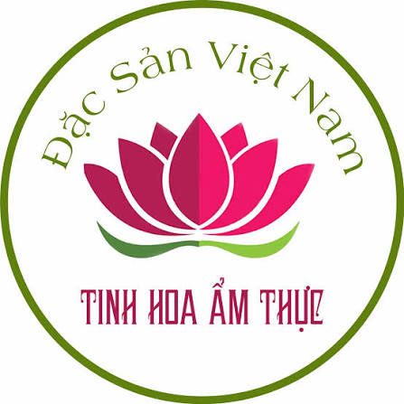
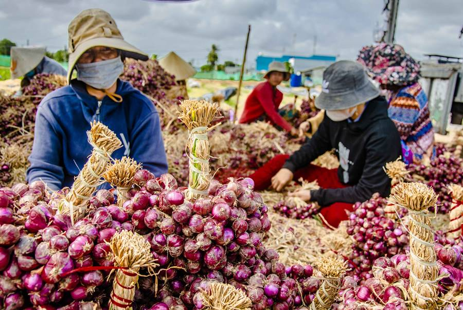

80.000 VNĐ / Kg
Hành tím Vĩnh Châu là đặc sản nổi tiếng của thị xã Vĩnh Châu, tỉnh Sóc Trăng. Hành có củ chắc, vỏ tím đẹp, vị cay nhẹ, hương thơm đặc trưng và được sử dụng rộng rãi trong chế biến món ăn. Đây là một trong những nông sản chủ lực của Sóc Trăng, được tiêu thụ trên cả nước và xuất khẩu.
Xuất xứ: Vĩnh Châu - Sóc Trăng
Khối lượng: 1 Kg
Thành phần: 100% hành tím tươi
Hạn sử dụng: 30 ngày
Bảo quản: Nơi khô ráo, thoáng mát, tránh ẩm
Giao hàng: Toàn quốc.